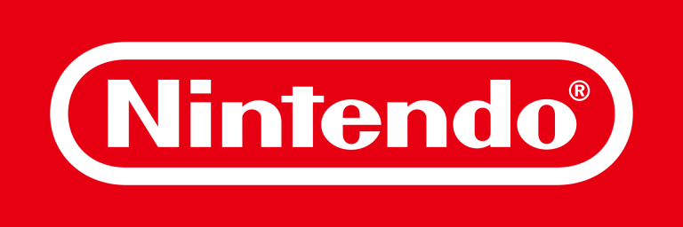
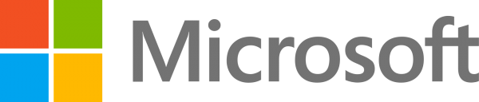
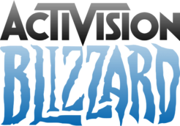

Sony
Sony adalah perusahaan asal Jepang yang didirikan pada tahun 1946. Salah satu produk paling terkenal dari Sony adalah console Playstation-nya. Selain itu, Sony juga memproduksi video gamenya sendiri, seperti:
Tencent adalah perusahaan besar asal China yang berfokus pada game mobile. Meskipun begitu, Tencent juga memiliki sebuah game developer studio asal Amerika, Riot Games, yang berfokus pada game online pada platform PC. Beberapa game besar yang dikeluarkan oleh Tencent dan perusahaan lain miliknya:

Nintendo adalah perusahaan game yang juga berasal dari Jepang. Nintendo sudah terkenal dengan console-console dan game buatannya dari sejak lama. Selain console, akhir-akhir ini Nintendo juga mulai merilis gamenya ke platform mobile. Beberapa produk yang terkenal dari Nintendo:

Microsoft, salah satu perusahaan teknologi terbesar yang terkenal dengan produk OS-nya yaitu Windows, ternyata juga merupakan perusahaan game terbesar di dunia pada tahun 2021. Dalam dunia game, Microsoft merupakan produsen dari console Xbox dan beberapa game seperti:

Dibandingkan perusahaan lainnya yang ada di daftar ini, Activision Blizzard merupakan perusahaan yang berumur paling muda. Meskipun baru didirikan pada tahun 2008, perusahaan ini merupakan hasil merger (gabungan) dari 2 perusahaan yang sudah mempunyai nama besar, yaitu: Activision dan Blizzard. Game-game yang telah diproduksi oleh perusahaan ini diantaranya: